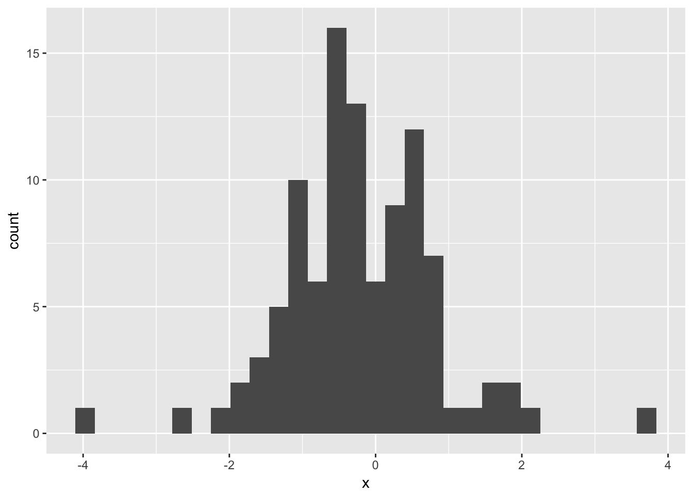
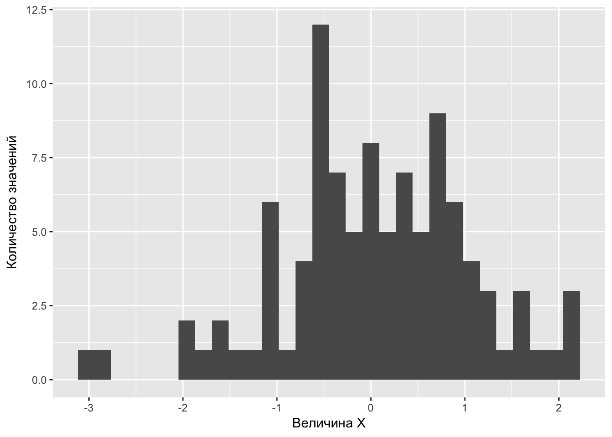
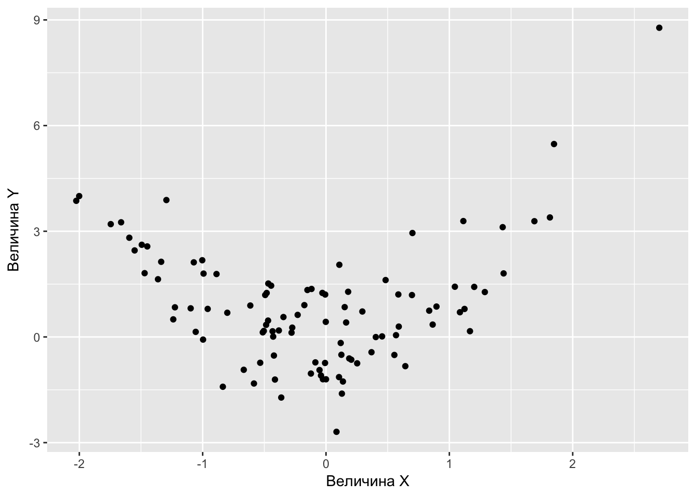
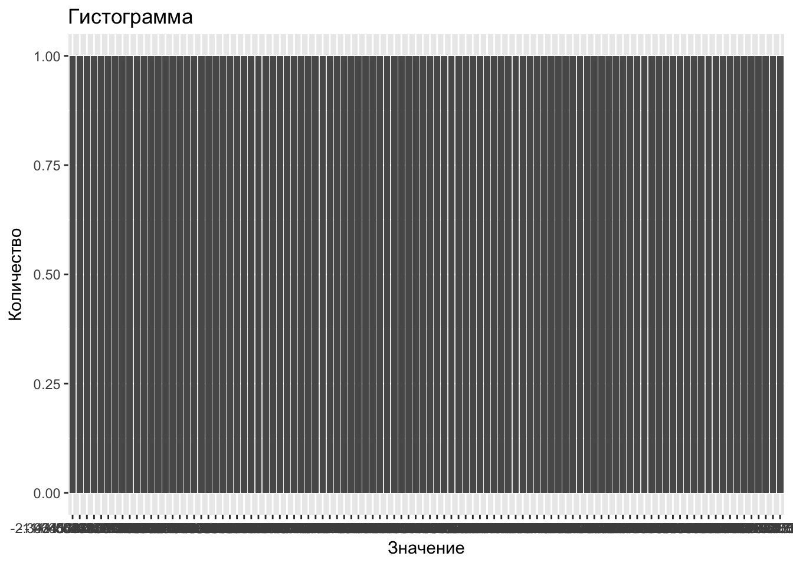
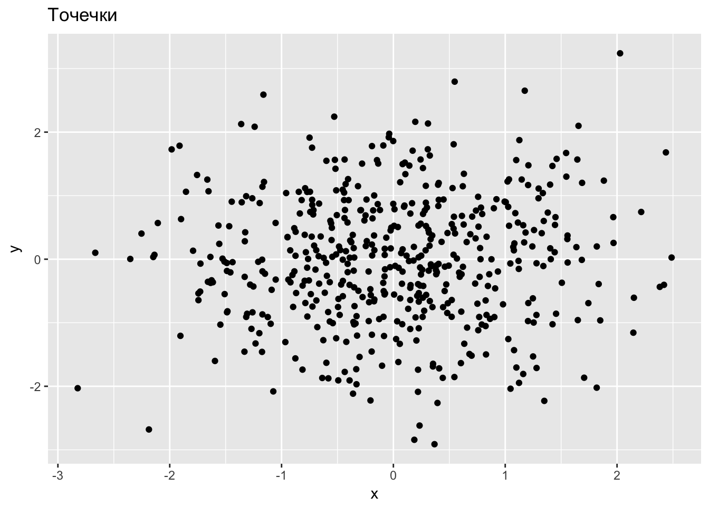

Глава 1 Первые шаги
Поехали!
Алексей Гагарин
1.1 Установка софта
Казалось бы, чего проще — поставить программу?! Однако не всегда всё идёт гладко.
Самая распространённая проблема, с которой мне доводилось бороться на разных компьютерах, — это русские буквы и пробелы в названиях файлов и папок под Windows.
Если ты используешь Windows, то никогда при серьёзной работе не используй русские буквы и пробелы в названиях файлов и папок.
Папку с котиками можно оставить под названием мои котики :)
Заповедь о русских буквых легко нарушить даже не осознавая этого. Если имя пользователя Windows написано русскими буквами, например, Машенька, то все документы этого пользователя будут находиться в папке C:/Users/Машенька/Documents/.
Для серьёзной работы под Windows нужно создать нового пользователя с английским именем, например, Mashenka, залогиниться и работать из-под него.
Переименование старого пользователя не помогает.
1.1.1 R
Windows и Macos: заходим на официальный сайт и скачиваем.
Linux на примере Ubuntu 16.04 Xenial:
sudo echo "deb http://cran.rstudio.com/bin/linux/ubuntu xenial/" | sudo tee -a /etc/apt/sources.list
gpg --keyserver keyserver.ubuntu.com --recv-key E084DAB9
gpg -a --export E084DAB9 | sudo apt-key add -
sudo apt-get update
sudo apt-get install r-base r-base-devВместо классического R можно поставить конкурирующий дистрибутив R от Microsoft, MRO. Отличия MRO от классического R:
Работает только с 64-битным процессором
Использует быструю библиотеку MKL для линейной алгебры
По умолчанию ставит не самые свежие пакеты, а версии пакетов выпущенные на заданную дату. Это удобная особенность позволяет легко воспроизвести результаты работы, даже если какой-нибудь пакет кардинально изменился.
Опытные пользователи могут самостоятельно настроить R на использование более быстрых библиотек для линейной алгебры.
Macos: настраиваем оптимизированную под мак библиотеку:
cd /Library/Frameworks/R.framework/Resources/lib
ln -sf /System/Library/Frameworks/Accelerate.framework/Frameworks/vecLib.framework/Versions/Current/libBLAS.dylib libRblas.dylibMacos: восстанавливаем дефолтную библиотеку R:
cd /Library/Frameworks/R.framework/Resources/lib
ln -sf libRblas.0.dylib libRblas.dylibНа линуксе можно поэкспериментировать с выбором разных BLAS
1.1.2 Rstudio
Rstudio — это гламурная оболочка, позволяющая удобно работать с R. Никаких новых возможностей к R не добавляет, но делает многие вещи гораздо более удобными, особенно для новичка.
Оболчка Rstudio открытая и бесплатная. Есть платная версия Rstudio, платной в ней является круглосуточная поддержка пользователей. И иногда оболочку Rstudio путают с программой для восстановления данных R-studio, которая полностью платная.
Любители заглянуть вперёд и опробовать новые фишки могут поставить preview-версию Rstudio. Теоретически подобная бета-версия может быть менее устойчивой чем обычная. По моему опыту никаких проблем со стабильностью в preview-версии не было, а приятные плюшки, ещё не вошедшие в текущую версию, есть :)
Настройка Rstudio:
- Заходим в Tools - Global options - General:
Убираем галочку Restore .Rdata into workspace at startup.
В разделе Save workspace to .Rdata on exit выбираем Never
Rstudio по умолчанию при выходе сохраняет все объекты в памяти в файл, который затем подгружается при старте. Это плохая привычка. Постепенно в нём будет накапливаться мусор. Рано или поздно мусора станет так много, что либо загрузка Rstudio будет занимать немеряно времени, либо при загрузке будет происходить ошибка.
- Заходим в Tools - Global options - Sweawe:
- В разделе Weave .Rnw files using выбираем knitr.
Для связи R с Латехом мы будем использовать более передовой knitr. Первопроходец Sweave сделал прекрасную работу и его подвиги мы будем помнить и чтить :)
- Заходим в Tools - Global options - Code - Diagnostics:
- Выставляем все галки!
Настоящие леди и джентельмены, а также синьоры и синьориты, пишут стильный код!
1.1.3 LaTeX
Латех — это система для создания красивых структурированных текстов. Пользоваться Вордом для написания курсовых или научных статей — это дурной вкус. Латех дарит возможность писать красивые математические формулы. В силу простоты текстового формата для хранения документов Латех идеально подходит для взаимодействия с другими программами. Связав R и Латех с помощью грамотного программирования, можно в один клик обновлять сложные отчёты при получении новых данных или избегать ошибок, связанных с копированием результатов вычислений в презентацию.
Под Linux основной дистрибутив латеха — это TeXLive. Лучше всего поставить свежую версию TeXLive руками.
После ручной инсталляции нам надо убедить Ubuntu, что ей не надо ставить латех из своего репозитория:
sudo apt-get install equivs freeglut3
mkdir -p /tmp/tl-equivs && cd /tmp/tl-equivs
wget http://www.tug.org/texlive/files/debian-equivs-2016-ex.txt
cp -f debian-equivs-2016-ex.txt texlive-local
equivs-build texlive-local
sudo dpkg -i texlive-local_2016-2_all.debПод Macos основной дистрибутив латеха — это Mactex.
Под Windows существует два конкурирующих дистрибутива — TexLive и Miktex. Я лично рекомендую TexLive. Если выбирать Miktex, то для установки полноценного теха надо скачать не Basic Miktex, а Net Installer!
Важно ставить полную версию латеха со всеми пакетами!
Полная установка может занять больше часа, и занять несколько гигабайт жёсткого диска, но красивые документы того стоят.
Если нет необходимости делать красивые структурированные документы в pdf формате, то без Латеха можно обойтись.
В данном учебнике не будет серьёзного введения в латех, мы только затронем вопрос взаимодействия R-латех.
Хорошими введениями в тех будут: Воронцов, LaTeX в примерах1
1.1.4 git-клиент
Git — это система контроля версий. Она позволяет разным авторам работать над одним проектом. Если что-то пошло не так, то можно вернуться на любой момент времени в прошлом — это бывает очень полезно :)
Тру программеры работают с git из командной строки, а новичкам здорово облегчит жизнь git с графической оболочкой.
Для windows и macos есть Github Desktop.
В качестве альтернативы Github Desktop есть кросс-платформенный бесплатный для некоммерческих проектов Smartgit. Будьте осторожны при установке: надо вовремя поставить галочку на бесплатной версии. Иначе установится демка на 15 дней.
Если ты хочешь освоить git как тру-программер, то можешь начать с бесплатного курса try-git на codeschool.
Немного настроек в командной строке macos/linux:
git config --global user.name "Ivan Ivanov"
git config --global user.email Ivan_Ivanov@ivanov_mail.comВ качестве графической оболочки можно выбрать, например, бесплатный для open-source проектов кросс-платформенный Есть также
1.1.5 Текстовый редактор
Самое важное: Word — это не текстовый редактор! Текстовый редактор — это программа с помощью которой редактируют файлы с простым текстовым содержимым, а Word сохраняет файлы в специальном формате, где кроме текста сохраняется ещё куча дополнительной информации. Расширение у текстового файла может быть довольно произвольным, .txt, .md, .R, .tex и так далее.
Текстовых редакторов много. Я советую кросс-платформенный открытый и бесплатный Atom. Скачать его можно на atom.io. Изнутри самого редактора Atom можно установить кучу плагинов. С помощью плагинов можно подсвечивать синтаксис различных языков или превратить Atom в приличную среду разработки :)
Дополнительные плагины для Atom ставятся через меню Atom - Preferences - Install. Для работы с R и Латехом советую поставить language-markdown, language-knitr, atom-beautify.
1.1.6 STAN
…
1.1.7 jupyter
Скачиваем дистрибутив Anaconda.
Под Ubuntu и Macos запускаем R из командной строки. Именно из командной строки, а не из под Rstudio, иначе чуда не произойдёт.
Далее инструкция с github.com/IRkernel/IRkernel:
install.packages(c('repr', 'IRdisplay', 'crayon', 'pbdZMQ', 'devtools'))
devtools::install_github('IRkernel/IRkernel')
IRkernel::installspec() # to register the kernel in the current R installationИз командной строки запускаем jupyter:
jupyter notebookДля корректного сохранения блокнота в pdf на Ubuntu/Macos
pip install nbbrowserpdfЧтобы работало сохранение pdf с русскими буквами нужно руками подменить дефолтный шаблон.
1.1.8 LyX
Многие пользователи привыкшие к Ворду тяжело переходят на латех. Ведь в текстовом редакторе не видно формулу в привычном виде, а виден только её код. Редактор LyX заполняет эту нишу: используя за кадром тех, он показывает пользователю формулы, таблицы и рисунке в естественном виде. При этом LyX отлично взаимодействует с R.
Недостатком LyX, пожалуй, является его невысокая популярность. Пользователи, боящиеся латеха, сидят в Ворде, а те, кто понял прелести латеха, уже не хотят ничего вспомогательного :)
Windows и Macos: скачиваем с официального сайта.
Ubuntu:
sudo add-apt-repository ppa:lyx-devel/release
sudo apt-get update
sudo apt-get install lyx1.1.9 Шрифты
Просмотрщик шрифтов Ubuntu (16.04)
sudo add-apt-repository ppa:font-manager/staging
sudo apt-get update
sudo apt-get install font-managerВ pdf-версии данного учебника используется шрифт Linux Libertine. Он открытый и бесплатный и содержит буквы как русского, так и многих других алфавитов. Скачать его можно здесь: …
Шрифты могут быть записаны в разных форматах. Основные — это TTF, OTF и Post-script. Рядовой пользователь может смело выбирать TTF или OTF, а Post-script нужен скорее дизайнерам и типографам.
1.1.10 Pandoc
Pandoc — это конвертер текстовых форматов. Он умеет превращать файлы в формате маркдаун во всё, что движется: tex, pdf, docx, epub, html…
Ubuntu (16.04):
sudo apt-get install pandoc pandoc-citeproc1.1.11 gretl
Тебе страшно? Тебя пугает даже список того, что нужно установить? Ты боишься R, а регрессию надо построить через 5 минут? Тогда разумное спасение — это gretl. Для gretl не обязательно учиться программировать: статистические тесты, графики и эконометрические модели доступны через меню. Кроме того, gretl даёт возможность пользователю взаимодействовать с R, что спасает в тех случаях, когда возможностей gretl не хватает.
Естественно, gretl кросс-платформенный открытый и бесплатный, gretl.
1.2 Весёлый калькулятор
R можно использовать как весёлый калькулятор:
5 + 9## [1] 14Что-нибудь более интересное:
a <- factorial(4)
b <- 2^3
a + b## [1] 32Признайся, ты всегда мечтал пошалить? Давай пока никто не видит поделим на ноль?
a <- 1 / 0
a## [1] InfЧто можно делать с бесконечностью, Inf?
1 / (Inf - 9)## [1] 0Возьмём арктангенс!
atan(Inf)## [1] 1.570796Ба! Да это же \(\pi/2\):
pi / 2## [1] 1.570796Но с неопределенностью ничего не поделаешь:
0 / 0## [1] NaNСокращение NaN означает «Not a Number», такой объект возникает в результате запрещённых арифметических операций.
Также в дебрях R живёт другой интересный зверь — NA, «Not Available», пропущенное наблюдение. Наблюдение может быть пропущенным по разным причинам: может быть его не было изначально, а может оно родилось в результате запрещённых арифметических операций. Поэтому всякое NaN является NA, но не всякое NA является NaN. Проверять, является ли что-либо NA или NaN, можно так:
is.na(0 / 0)## [1] TRUEis.nan(0 / 0)## [1] TRUEa <- NA
is.na(a)## [1] TRUEis.nan(a)## [1] FALSE1.2.0.1 Простые операции с векторами
Вектор из чисел по порядку:
a <- 3:10
a## [1] 3 4 5 6 7 8 9 10Вектор из одинаковых чисел:
b <- rep(777, times = 5)
b## [1] 777 777 777 777 777Вектор из конкретных чисел:
vect <- c(5, -4, 1)
vect## [1] 5 -4 1Что можно делать с вектором?
sum(vect)## [1] 2Хотите среднее арифметическое?
mean(vect)## [1] 0.66666671.2.1 Отбор значений
Выберем из вектора \(s\) значения больше \(0\):
# случайная выборка из 40 равномерно распределённых на [-3;1] чисел:
s <- runif(40, min = -3, max = 1)
b <- s[s > 0] # отбираем те s, что больше нуля
b## [1] 0.6899387 0.7994359 0.6861674 0.5441720 0.7868757 0.3939321 0.7683485
## [8] 0.7855841 0.3427107Можно выбрать конкретные \(s\), например с 6-го по 20-ое:
s[6:20]## [1] -1.3112145 -2.4044164 0.6899387 -0.6940551 -0.3466832 -1.2767996
## [7] 0.7994359 -0.1299958 -2.7988407 -1.9950965 -2.6203430 -2.3922608
## [13] -2.6019039 -2.6484976 0.6861674Хочу 5-ый, 7-ой и 13-ый элементы вектора!
s[c(5, 7, 13)]## [1] -0.3930771 -2.4044164 -0.1299958Можно узнать, сколько значений s больше нуля:
sum(s > 0)## [1] 9Еще полезная штучка — количество элементов в векторе:
length(b)## [1] 9Операции, похожие на те, что проделали с векторами, можно делать и с другими типами данных, например, с матрицами (matrix), таблицами (table) и др. Покажем на примере наборов данных (data frame).
Будем использовать набор данных diamonds из пакета ggplot2. Множество других встроены во многие пакеты, а также в сам R, и список с кратким описанием последних можно вызвать командой library(help = "datasets").
Наборы данных состоят из строк (rows) и столбцов (columns); в каждой строке хорошо построенного набора — характеристики одного объекта, а по столбцам — значения одной характеристики у разных объектов. Так, например, в diamonds объектами являются бриллианты, а их характеристиками — цена, вес, цвет и т. д. Это можно увидеть с помощью всё той же команды str():
str(diamonds)## Classes 'tbl_df', 'tbl' and 'data.frame': 53940 obs. of 10 variables:
## $ carat : num 0.23 0.21 0.23 0.29 0.31 0.24 0.24 0.26 0.22 0.23 ...
## $ cut : Ord.factor w/ 5 levels "Fair"<"Good"<..: 5 4 2 4 2 3 3 3 1 3 ...
## $ color : Ord.factor w/ 7 levels "D"<"E"<"F"<"G"<..: 2 2 2 6 7 7 6 5 2 5 ...
## $ clarity: Ord.factor w/ 8 levels "I1"<"SI2"<"SI1"<..: 2 3 5 4 2 6 7 3 4 5 ...
## $ depth : num 61.5 59.8 56.9 62.4 63.3 62.8 62.3 61.9 65.1 59.4 ...
## $ table : num 55 61 65 58 58 57 57 55 61 61 ...
## $ price : int 326 326 327 334 335 336 336 337 337 338 ...
## $ x : num 3.95 3.89 4.05 4.2 4.34 3.94 3.95 4.07 3.87 4 ...
## $ y : num 3.98 3.84 4.07 4.23 4.35 3.96 3.98 4.11 3.78 4.05 ...
## $ z : num 2.43 2.31 2.31 2.63 2.75 2.48 2.47 2.53 2.49 2.39 ...Отобразим наблюдения с 5-го по 7-е:
diamonds[c(5:7), ]## # A tibble: 3 × 10
## carat cut color clarity depth table price x y z
## <dbl> <ord> <ord> <ord> <dbl> <dbl> <int> <dbl> <dbl> <dbl>
## 1 0.31 Good J SI2 63.3 58 335 4.34 4.35 2.75
## 2 0.24 Very Good J VVS2 62.8 57 336 3.94 3.96 2.48
## 3 0.24 Very Good I VVS1 62.3 57 336 3.95 3.98 2.47Первые 4 значения параметров цены (price) и веса (carat):
head(diamonds[, c("price", "carat")], n = 4)## # A tibble: 4 × 2
## price carat
## <int> <dbl>
## 1 326 0.23
## 2 326 0.21
## 3 327 0.23
## 4 334 0.29Можно отобразить и все названия характеристик:
colnames(diamonds)## [1] "carat" "cut" "color" "clarity" "depth" "table" "price"
## [8] "x" "y" "z"Найдём, сколько камней имеют чистоту не меньшую, чем VS2 (характеристика clarity — упорядоченный фактор).
nrow(diamonds[diamonds$clarity >= "VS2", ])## [1] 309401.2.2 Сравнение чисел — штука тонкая
Правда ли, что 0.4 + 0.1 равно 0.5?
0.4 + 0.1 == 0.5## [1] TRUEА правда ли, что 0.4 - 0.1 равно 0.3?
0.4 - 0.1 == 0.3## [1] FALSEХм, что-то Марь Иванна в школе другое говорила…
Почему так случилось? Компьютер хранит числа в памяти в двоичной системе счисления. В двоичной системе обычное число 0.1 будет записываться в виде бесконечной периодической дроби. Следовательно, без дополнительных ухищрений храниться в памяти абсолютно точно оно не может. Поэтому де-факто компьютер хранит в памяти округленную версию от 0.4, 0.1 и 0.3. В данном случае при вычитании ошибки округления не компенсируют друг друга.
Мораль из этого примера проста:При операциях с дробными числами помни: компьютер считает примерно!
Скорее всего, проверка точного равенства потенциально дробных чисел не нужна. Вместо неё бывает осмысленна проверка примерного равенства:
all.equal(0.4 - 0.1, 0.3)## [1] TRUEЕдинственный нюанс. Оператор == выдаёт результат типа TRUE/FALSE, а функция all.equal может выдать развёрнутый ответ текстом. Поэтому, если нужно использовать функцию all.equal после проверки условия if, то её нужно обрамить в isTRUE:
if (isTRUE(all.equal(a, b))) {
...
}1.3 Первый скрипт
….
Если текст программы содержит русские или другие неанглийские буквы, например, в комментариях, то при сохранении файла Rstudio предложит выбрать кодировку.
картинка
Кодировка определяет какой конкретно числовой код будет сопоставлен в записанном файле каждой букве. Например, букве ё в кодировке UTF-8 сопоставлен десятичный2 код 1105.
Для русского языка есть несколько распространённых кодировок: UTF-8 и CP1251. Linux и Macos используют по умолчанию кодировку UTF-8, а вот Windows3 сохраняет простые текстовые файлы в кодировке CP1251.
Если русскоязычный файл записать в одной кодировке, а пытаться открыть с помощью другой, то мы увидим на экране “кракозябры”. Поэтому хорошо, когда все используют одну кодировку. Кодировка UTF-8 более универсальна, чем CP1251. Например, с помощью кодировки UTF-8 в одном тексте можно использовать и русские буквы и французские акценты и китайские иероглифы.
Мы всегда будем использовать кодировку UTF-8.
1.4 Установка и подключение пакетов
Одна из сильных сторон R — это открытость: каждая домохозяйка может написать свой пакет для R и выложить его в публичное пользование. Основные операции, например, сложение и умножение чисел или построение множественной регрессии, реализованы в базовом R и не требуют подключения пакетов. Более сложные операции, например, работа с панельными данными или построение сложных графиков, требуют подключения дополнительных пакетов.
Каждый пакет содержив в себе набор функций, расширяющих возможности R. Для R написано более 10 тысяч пакетов. Среди них есть и откровенный мусор, и бриллианты, например, ggplot2, настолько ценные, что их копируют в другие языки программирования.
Скорее всего нужный тебе пакет можно найти:
- В официальном хранилище пакетов R, CRAN.
Здесь пакеты прошли минимальное тестирование. Это отнюдь не гарантия качества пакета, но всё же серьезный давно функционирующий пакет наверняка будет выложен на CRAN.
- В системе репозиториев github.com.
Здесь, как правило, разработчики публикуют более свежие версии пакетов, ещё не выложенные на CRAN, или молодые пакеты в процессе разработки.
- В хранилище пакетов для биологов
bioconductor.
Это своя отдельная экосистема пакетов R со специальным инсталлятором, блэкджеком и поэтэссами.
Есть и другие хранилища пакетов, например, R-forge и …, но они гораздо менее популярны.
Сначала надо определиться, какой пакет тебе нужен. Можно погуглить, можно воспользоваться официальным классификатором пакетов R ….
Чтобы начать использовать какой-нибудь пакет R нужно сделать две вещи:
- Установить пакет (install package)
Установка означает, что пакет будет скачан из Интернета и сохранён в специальной папке на жёстком диске. Установка пакета выполняется один раз. Каждый раз при использовании пакета устанавливать его не нужно. Переустанавливать пакет имеет смысл только если вышла новая его версия.
- Подключить пакет (attach package)
Подключение пакета выполняется каждый раз перед его использованием. Пакеты подключаются командой library.
С репозитория CRAN пакет ставится командой R:
install.packages("имя пакета")В Rstudio установить пакет с репозитория CRAN можно через меню: Tools - Install packages. Далее нужно набрать название пакета, можно указать сразу несколько названий через пробел, и нажать Install.
Главное при установке пакета — не бояться сообщений красным цветом!
Любые сообщения (messages) R выводит красным цветом и по неопытности их можно принять за ошибку, что скорее всего не так. Ошибка всегда сопровождается словом Error. Если слова Error нет, то всё идёт по плану!
Почему R использует красный цвет? Потому, что установка пакета — это потенциально опасное действие, как и установка любой программы. Пакеты на официальном репозитории CRAN проходят определённую проверку, но если ты используешь R для многомиллионных сделок каждый день, то неплохо бы точно знать, что ты ставишь :)
Установить пакет с github.com немногим сложнее. Здесь надо знать не только название пакета, но и название репозитория, где он хранится. Часто название репозитория — это фамилия автора пакета. Официальной классификации всех пакетов R на github нет, поэтому чтобы понять, какой нужен, остаётся только гуглить.
Кроме того, для установки пакетов с github.com потребуется установить с официального репозитория пакет devtools.
Джентельменский набор пакетов R зависит от сферы деятельности, но практически всем сталкивающимся с анализом данных пригодится коллекция пакетов tidyverse.
Очень часто пакеты R ошибочно называют библиотеками. Библиотека — это папка на жёстком диске компьютера, где хранятся пакеты.
Если пакет установлен, то можно воспользоваться его командами. Если из пакета нужна всего одна команда и один раз, то быстрее указать и нужный пакет, и нужную команду. Например, вызовем команду qplot из пакета ggplot2 и построим гистограмму для случайной выборки из 100 нормальных стандартных случайных величин:
x <- rnorm(100) # генерируем случайную выборку из 100 нормальных N(0;1) случайных величин
ggplot2::qplot(x)## `stat_bin()` using `bins = 30`. Pick better value with `binwidth`.
Если же ты хочешь использовать команды некоторого пакета много раз, то проще подключить пакет командой library(). При этом не надо будет каждый раз набирать название пакета и двойное двоеточие. Можно просто использовать команды из этого пакеты:
library("ggplot2") # подключаем пакет `ggplot2`
x <- rnorm(100) # генерируем случайную выборку из 100 нормальных N(0;1) случайных величин
y <- x^2 + rnorm(100)
# строим гистограмму величины x:
qplot(x) + xlab("Величина X") + ylab("Количество значений")## `stat_bin()` using `bins = 30`. Pick better value with `binwidth`.
# строим диагрраму рассеяния величин x и y:
qplot(x, y) + xlab("Величина X") + ylab("Величина Y")
При подключении пакета, как и при его установке, не стоит пугаться сообщений красным шрифтом. Только явное слово Error говорит об ошибке. Кроме того, часто можно столкнуться с предупреждением (warning) о том, что пакет был создан для более новой версии R.
Warning message: package ‘xxx’ was built under R version 3.3.1
Это не страшно. Это означает лишь, что у разработчика пакета xxx установлена более свежая версия R, чем у тебя. Обновлять R на своём компьютере при каждом его мелком обновлении, пожалуй, неразумно, но раз в полгода стоит.
Правила хорошего тона советуют подключать все нужные пакеты в начале скрипта.
Чтобы узнать в каком пакете живет заданная функция, например lm, можно прямо спросить у R:
help("lm")На самом верху справа документации будет написано lm {stats}. Это означает, что функция lm живёт в пакете stats. Пакет stats входит в ядро R, поэтому подключать его явно командой library("stats") не требуется.
Для установки различных пакетов, работающих с Интернетом под Linux может потребоваться установка дополнительных библиотек:
sudo apt-get install libssl-dev libcurl4-openssl-dev libxml2-devМы будем часто использовать пакеты ggplot2, dplyr, forcats, lubridate. Все эти пакеты входят в коллекцию пакетов tidyverse. Поэтому вместо:
library("ggplot2")
library("dplyr")
library("forcats")
library("lubridate")Мы будем выполнять в R одну команду:
library("tidyverse")1.5 Чтение и запись данных
Прежде всего неплохо бы знать, где лежит на жёстком диске файл с нужными данными. Напомню, что названия файлов и папок не должны содержать русским букв и пробелов!
У R есть понятие рабочей папки (working folder). В рабочей папке R ищет все требуемые файлы. Одно из простых решений — указать в качестве рабочей папки ту папку, где лежит нужный файл и далее прочитать его.
Допустим, нужный нам файл лежит в папке C:/project_A/data/. Тогда для установки рабочей папки достаточно выполнить команду:
setwd("C:/project_A/data/")Вместо этой команды можно воспользоваться меню Rstudio: Session - Set working directory - Choose directory. Далее выбрать нужную папку и нажать Open.
После этого можно прочитать нужный нам файл. Начнём с пакета rio позволяющего импортировать данные практически любого типа. На самом деле авторы пакета rio просто объединили усилия многих разработчиков в единую команду. И получилось хорошо :)
Хочешь загрузить данные в формате .csv? Пожалуйста!
data <- rio::import("имя_файла.csv")Хочешь загрузить данные в формате .xlsx? Пожалуйста!
data <- rio::import("имя_файла.xlsx")Однако не всегда всё идёт гладко, поэтому остановимся подробнее на разных форматах данных.
1.6 Распространённые форматы
Форматов данных много, опишем некоторые из них
1.6.1 Comma separated values: сsv
- Иван, ты знаешь у нас в Чили есть нестандартные обозначения. Мы используем десятичную запятую вместо точки, умножение пишем точкой, а не крестиком, деление - двумя точками, а при измерении температуры пользуемся градусами Цельсия. Я уверен, что ты сможешь поправить все по-своему, как привыкли дети в России.
- Разумеется, Раймундо, сделаем. Это не составит труда. Со стены Ивана Высоцкого вконтакте
1.6.2 Форматы Excel: xls и xlsx
1.6.3 Формат SPSS: sav
1.6.4 Формат Eviews: wf1
1.6.5 Формат Stata: dat
1.7 Интернет-источники данных
Зачастую данные не обязательно даже сохранять. В R есть пакеты, дающие доступ к некоторым источникам данных в Интернете:
quandlquantmodWDI
СССР — родина слонов!
Пакеты, дающие доступ к данным по России:
sophisthsesophist.hse.rucbrЦентральный Банк Россииdatamosdatamos.rufinam.ru.
А эти источники ещё ждут желающих написать пакет для R:
gks.ru
open data gov ???
1.8 Стиль кода
R одинаково выполнит и команды
x<-6-7
y<--6+9
x - yи команды
x <- 6 - 7
y <- -6 + 9
x - yОднако второй вариант гораздо приятнее для чтения. С тем, кто пишет код как в первом примере, Английская королева рядом не сядет! Чтобы иметь возможность войти в палату Лордов и Общин, тебе следует писать стильный код!
Если ты работаешь в команде, то руководствуйся тем стилем кода, который в ней принят. А для новичков я советую использовать стиль кода, которого придерживается Hadley Wickham, автор очень популярных пакетов R ggplot2 и dplyr:
- После запятой всегда пиши пробел. Перед запятой — никогда:
paste0("Hi ", "guys!")- Знак присваивания
<-, знаки арифметических действий (+,-,*), логические проверки (>,<,==и прочие) с двух сторон окружай одинарными пробелами.
x <- (3.5 + 7) * (2.8 - 9)- Открывающую фигурную скобку оставляй на старой строке, а закрывающую — ставь на новую:
if (x == y) {
message("Variables x and y are equal.")
}В Rstudio можно включить автоматическую проверку стиля кода в Tools - Global options - Code - Diagnostics. Настоящие сэры и истинные леди в разделе Diagnostics могут проставить все галочки.
1.9 Две записи функций
Мы все привыкли к тому, что домохозяйки пишут рецепт в естественном порядке, а математики функции — в обратном. Сравни:
Возьмите пепел перьев чёрного петуха
Добавьте печень дракона
Варите на медленном огне 2 дня
и
\[ \cos(\sin(|x|)) \]
У домохозяек порядок изложения совпадает с порядком действий. У математиков сначала написано про косинус, но считается он в самом конце.
Похоже Лёнька Эйлер и Алёшка Клеро
фото
введя обозначение \(f(x)\) отделили математиков от домохозяек и, вероятно, пустили математику по ложному пути. Было бы гораздо удобнее, если бы в математике функции также записывали в естественном порядке! Но обозначение \(f(x)\) мы впитали с молоком матери, уже вряд ли что исправишь.
R позволяет использовать обе традиции обозначени.
Традиция Эйлера-Клеро:
cos(sin(abs(10)))## [1] 0.8556344Для того, чтобы иметь возможность писать операции в естественном порядке, подключаем пакет dplyr:
library("tidyverse") # подключит dplyr, ggplot2 и прочие приятностиИ теперь, в традициях лучших кулинарных рецептов, можно написать
10 %>% abs() %>% sin() %>% cos()## [1] 0.8556344Оператор %>% называется трубочкой (pipe). (? канал) По первому впечатлению кажется, что эти трубочки долго писать. Но стоит к ним привыкнуть и ощущаешь, что они безумно удобны для сложных операций!
1.10 Манипуляции с данными
(здесь про типы данных)
Основной объект с которым приходится работать — это табличка с данными. Табличка с данными представляет собой простую двумерную таблицу. Переменные размещаются по столбцам. Каждый столбец может быть своего типа: скажем в одном — числа, а в другом — названия предприятий. Если значение в клетке неизвестно, то там стоит специальное значение NA.
Отличие от матрицы от таблицы с данными состоит в том, что в матрице все клеточки одинакового типа (все — числовые или все — текстовые), а в таблице с данными каждый столбец может быть своего типа.
При обработке данных нам помогут рабочие лошадки:
Быстрый взгляд на табличку
Отбор наблюдений
Отбор и переименование переменных
Преобразование и создание новых переменных
Агрегирование таблиц
Преобразование широких и длинных таблиц
Все эти действия можно сделать в базовом R, но это ужасно неудобно. Жизнь становится прекрасной с пакетами data.table, dplyr, reshape2, broom и tidyr.
Седлаем наших верных коней:
library("tidyverse") # подключит пакеты dplyr, ggplot2 и прочие
library("data.table")
library("reshape2")Погнали!
Пакет data.table работает быстрее dplyr, а у dplyr более приятный синтаксис.
Перед работой с табличкой данных с помощью data.table требуется присвоить ей специальный класс:
cars2 <- data.table(cars)Содержимое таблиц cars и cars2 абсолютно одинаково, просто они чуть по-разному хранятся и обрабатываются компьютером.
1.10.1 Быстрый взгляд на табличку
С помощью базового R:
str(mtcars)## 'data.frame': 32 obs. of 11 variables:
## $ mpg : num 21 21 22.8 21.4 18.7 18.1 14.3 24.4 22.8 19.2 ...
## $ cyl : num 6 6 4 6 8 6 8 4 4 6 ...
## $ disp: num 160 160 108 258 360 ...
## $ hp : num 110 110 93 110 175 105 245 62 95 123 ...
## $ drat: num 3.9 3.9 3.85 3.08 3.15 2.76 3.21 3.69 3.92 3.92 ...
## $ wt : num 2.62 2.88 2.32 3.21 3.44 ...
## $ qsec: num 16.5 17 18.6 19.4 17 ...
## $ vs : num 0 0 1 1 0 1 0 1 1 1 ...
## $ am : num 1 1 1 0 0 0 0 0 0 0 ...
## $ gear: num 4 4 4 3 3 3 3 4 4 4 ...
## $ carb: num 4 4 1 1 2 1 4 2 2 4 ...С помощью dplyr:
glimpse(mtcars)## Observations: 32
## Variables: 11
## $ mpg <dbl> 21.0, 21.0, 22.8, 21.4, 18.7, 18.1, 14.3, 24.4, 22.8, 19....
## $ cyl <dbl> 6, 6, 4, 6, 8, 6, 8, 4, 4, 6, 6, 8, 8, 8, 8, 8, 8, 4, 4, ...
## $ disp <dbl> 160.0, 160.0, 108.0, 258.0, 360.0, 225.0, 360.0, 146.7, 1...
## $ hp <dbl> 110, 110, 93, 110, 175, 105, 245, 62, 95, 123, 123, 180, ...
## $ drat <dbl> 3.90, 3.90, 3.85, 3.08, 3.15, 2.76, 3.21, 3.69, 3.92, 3.9...
## $ wt <dbl> 2.620, 2.875, 2.320, 3.215, 3.440, 3.460, 3.570, 3.190, 3...
## $ qsec <dbl> 16.46, 17.02, 18.61, 19.44, 17.02, 20.22, 15.84, 20.00, 2...
## $ vs <dbl> 0, 0, 1, 1, 0, 1, 0, 1, 1, 1, 1, 0, 0, 0, 0, 0, 0, 1, 1, ...
## $ am <dbl> 1, 1, 1, 0, 0, 0, 0, 0, 0, 0, 0, 0, 0, 0, 0, 0, 0, 1, 1, ...
## $ gear <dbl> 4, 4, 4, 3, 3, 3, 3, 4, 4, 4, 4, 3, 3, 3, 3, 3, 3, 4, 4, ...
## $ carb <dbl> 4, 4, 1, 1, 2, 1, 4, 2, 2, 4, 4, 3, 3, 3, 4, 4, 4, 1, 2, ...С помощью broom
glance(mtcars)## nrow ncol complete.obs na.fraction
## 1 32 11 32 0и короткие описательные статистики:
tidy(mtcars)## column n mean sd median trimmed mad min
## 1 mpg 32 20.090625 6.0269481 19.200 19.6961538 5.4114900 10.400
## 2 cyl 32 6.187500 1.7859216 6.000 6.2307692 2.9652000 4.000
## 3 disp 32 230.721875 123.9386938 196.300 222.5230769 140.4763500 71.100
## 4 hp 32 146.687500 68.5628685 123.000 141.1923077 77.0952000 52.000
## 5 drat 32 3.596563 0.5346787 3.695 3.5792308 0.7042350 2.760
## 6 wt 32 3.217250 0.9784574 3.325 3.1526923 0.7672455 1.513
## 7 qsec 32 17.848750 1.7869432 17.710 17.8276923 1.4158830 14.500
## 8 vs 32 0.437500 0.5040161 0.000 0.4230769 0.0000000 0.000
## 9 am 32 0.406250 0.4989909 0.000 0.3846154 0.0000000 0.000
## 10 gear 32 3.687500 0.7378041 4.000 3.6153846 1.4826000 3.000
## 11 carb 32 2.812500 1.6152000 2.000 2.6538462 1.4826000 1.000
## max range skew kurtosis se
## 1 33.900 23.500 0.6106550 -0.37276603 1.06542396
## 2 8.000 4.000 -0.1746119 -1.76211977 0.31570933
## 3 472.000 400.900 0.3816570 -1.20721195 21.90947271
## 4 335.000 283.000 0.7260237 -0.13555112 12.12031731
## 5 4.930 2.170 0.2659039 -0.71470062 0.09451874
## 6 5.424 3.911 0.4231465 -0.02271075 0.17296847
## 7 22.900 8.400 0.3690453 0.33511422 0.31588992
## 8 1.000 1.000 0.2402577 -2.00193762 0.08909831
## 9 1.000 1.000 0.3640159 -1.92474143 0.08820997
## 10 5.000 2.000 0.5288545 -1.06975068 0.13042656
## 11 8.000 7.000 1.0508738 1.25704307 0.28552971Пока что в пакете broom содержится ошибка, команды glance() и tidy() не срабатывают с некоторыми табличками данных. Тогда описательные статистики можно получить с помощью пакета psych:
library("psych")##
## Attaching package: 'psych'## The following objects are masked from 'package:ggplot2':
##
## %+%, alphadescribe(mtcars)## vars n mean sd median trimmed mad min max range skew
## mpg 1 32 20.09 6.03 19.20 19.70 5.41 10.40 33.90 23.50 0.61
## cyl 2 32 6.19 1.79 6.00 6.23 2.97 4.00 8.00 4.00 -0.17
## disp 3 32 230.72 123.94 196.30 222.52 140.48 71.10 472.00 400.90 0.38
## hp 4 32 146.69 68.56 123.00 141.19 77.10 52.00 335.00 283.00 0.73
## drat 5 32 3.60 0.53 3.70 3.58 0.70 2.76 4.93 2.17 0.27
## wt 6 32 3.22 0.98 3.33 3.15 0.77 1.51 5.42 3.91 0.42
## qsec 7 32 17.85 1.79 17.71 17.83 1.42 14.50 22.90 8.40 0.37
## vs 8 32 0.44 0.50 0.00 0.42 0.00 0.00 1.00 1.00 0.24
## am 9 32 0.41 0.50 0.00 0.38 0.00 0.00 1.00 1.00 0.36
## gear 10 32 3.69 0.74 4.00 3.62 1.48 3.00 5.00 2.00 0.53
## carb 11 32 2.81 1.62 2.00 2.65 1.48 1.00 8.00 7.00 1.05
## kurtosis se
## mpg -0.37 1.07
## cyl -1.76 0.32
## disp -1.21 21.91
## hp -0.14 12.12
## drat -0.71 0.09
## wt -0.02 0.17
## qsec 0.34 0.32
## vs -2.00 0.09
## am -1.92 0.09
## gear -1.07 0.13
## carb 1.26 0.291.10.2 Отбор наблюдений
С помощью dplyr:
head(cars)## speed dist
## 1 4 2
## 2 4 10
## 3 7 4
## 4 7 22
## 5 8 16
## 6 9 10cars_filtered <- filter(cars, speed > 10, dist < 20)
head(cars_filtered)## speed dist
## 1 11 17
## 2 12 14Не забывай про эквивалентный трубчатый синтаксис:
cars_filtered <- cars %>% filter(speed > 10, dist < 20)
Некоторые другие пакеты помимо dplyr содержат функцию filter. Чтобы избежать конфликта имён можно явно написать dplyr::filter вместо просто filter.
С помощью data.table:
cars_filtered <- cars2[speed > 10 & dist < 20]1.10.3 Отбор и переименование переменных:
С помощью dplyr:
mtcars2 <- select(mtcars, cylinder = cyl, mpg = mpg, carburator = carb)Помни о трубочках:
mtcars2 <- mtcars %>%
select(cylinder = cyl, mpg = mpg, carburator = carb)
Некоторые другие пакеты помимо dplyr содержат функцию select. Чтобы избежать конфликта имён можно явно написать dplyr::select вместо просто select.
1.11 Графики
График можно строить либо чтобы: - самому по-быстрому взглянуть на некий результат и сразу забыть график - показать график кому-нибудь
В первом случае нет никаких требований к графику — лишь бы самому было понятно, что там изображено. Если же график показывать кому-то ещё, то:
Идеальный график должен быстро и верно восприниматься смотрящим.
Из этого простого принципа следует ряд выводов:
- Идеальный график должен быть самодостаточным.
Если для понимания графика смотрящему требуется прочитать кучу текста вокруг или прослушать получасовое объяснение, то это нехорошо :) Вырежи свой график из статьи/книги/курсовой и подумай, понятен ли он?
- Подписывай оси.
[ссылка на xkcd]
Выбирай единицы измерения так, чтобы читатель не мучился, считая нули у каждой цифры.
Указывай единицы измерения.
Хорошо бы указать источник данных.
Лучше расшифровать сокращения, хотя иногда это бывает нелегко.
Никаких круговых диаграмм.
Круговые диаграммы — это табу. Да, R умеет их строить. Процитирую документацию к функции pie:
help(pie)Pie charts are a very bad way of displaying information. The eye is good at judging linear measures and bad at judging relative areas. A bar chart or dot chart is a preferable way of displaying this type of data.
Cleveland (1985), page 264: “Data that can be shown by pie charts always can be shown by a dot chart. This means that judgements of position along a common scale can be made instead of the less accurate angle judgements.” This statement is based on the empirical investigations of Cleveland and McGill as well as investigations by perceptual psychologists.
- Никаких псевдо-3D эффектов и прочих «рюшечек».
Посмотрите пару анимаций от DarkHorse.
Ось должна начинаться от нуля.
Полезно немного ознакомиться с творениями мэтров :)
Tufte, link
Очень часто к графикам относятся как к чему-то вспомогательному. На самом деле график очень часто является основным результатом, гораздо более важным, чем несколько страниц текста. Именно поэтому полезно отказаться от мысли «я тут за пять минут график вставлю» и потратить на график часок-другой!
1.11.1 Два простеньких графика
Простенькую гистограмму можно построить, например, с помощью функции qplot() из пакета ggplot2:
s <- rnorm(100)
qplot(factor(s), xlab = "Значение",
ylab = "Количество", main = "Гистограмма")
Ту же гистограммку можно построить с помощью функции ggplot() из того же пакета, предварительно преобразовав s в необходимый для ggplot() формат data frame:
s_df <- data.frame(s)
ggplot(s_df) + geom_bar(aes(factor(s))) +
labs(x = "Значение", y = "Количество", title = "Гистограмма")
И еще простенький график:
x <- rnorm(500) # 500 нормальных величин со средним 0 и дисперсией 1
y <- rnorm(500) # 500 нормальных величин со средним 0 и дисперсией 1
qplot(x, y, main = "Точечки")
Или:
xy_df <- data.frame(x = x, y = y)
ggplot(xy_df) + geom_point(aes(x, y)) + labs(title = "Точечки")
В зависимости от формата данных часто бывает удобно использовать и qplot(), и ggplot().
1.12 У меня ошибка!
Шеф! Всё пропало! Гипс снимают, клиент уезжает!
поговори с уточкой, посиди у озера
1.13 Ресурсы по R
Начнём с русскоязычных крупных книжек:
- Шипунов А.Б., Балдин Е.М. и др. Наглядная статистика. Используем R! * Мастицкий С.Э., Шитиков В.К., Статистический анализ и визуализация с помощью R
- Василенко Є.С, Обробка геологiчної iнформацiї з використанням програмного середовища R * Кабаков Р.И. R в действии. Анализ и визуализация данных на языке R
На русском также могут быть полезны:
- Стилевое руководство гугла: english, русский
- Блог r-analytics. На нём есть несколько других подборок русскоязычных ресурсов по R: раз и два. * Группа вконтакте rstatistics * Группа вконтакте spbrug * Группа вконтакте introstats * Венэбльз, Смит Введение в R
- Зарядов И.С. Введение в R: часть 1
- Зарядов И.С. Введение в R: часть 2
- Борис Демешев Цикл маленьких заметок по R
Вопросы и ответы:
stackoverflow Если возникли проблемы с программированием в R (и не только в R), а документация уже прочитана…
stats.stackexchange Можно спросить по статистическим методам и их реализации в R.
tex.stackexchange Вопросы и ответы про LaTeX
Он-лайн курсы и видеолекции с использованием R:
Try R Путь к сокровищам R для самых начинающих пиRатов!
datacamp.com Несколько платных и бесплатных интерактивных курсов по R
Видео-лекции курса Computing for Data Analysis: неделя 1, неделя 2, неделя 3, неделя 4. Сам курс доступен на coursera.org
Открытые крупные источники на английском:
Trevor Hastie, Robert Tibshirani, An Introduction to Statistical Learning. По книжке есть курс на платформе class.standford.edu
Rob Hyndman, Forecasting: principles and practice Книжка по временным рядам от автора пакета forecast
Garrett Grolemund, Hadley Wickham, R for Data Science
Colin Gillespie, Robin Lovelace, Efficient R programming, он-лайн книга для более продвинутых пользователей R. Написана на R и markdown :)
Rob Kabacoff, Quick R
Farnsworth, Econometrics in R
R-inferno Адский учебник по R с картинками Ботичелли, “Even if it doesn’t help you with your problem, it might amuse you”
Roger Peng, R programming for data science и на bookdown
Introduction to R, Введение с официального сайта
документация по графикам ggplot2
документация к R от stats.stackexchange
Шикарные шпаргалки от Rstudio
100 курсов и книг по R от разных университетов
Агрегатор блогов r-bloggers
Поисковик rseek.org
Великолепные виньетки к разным пакетам:
vars, векторные авторегрессии, есть вольный пересказ по-русски
dplyr манипуляции с данными
sandwich борьба с гетероскедастичностью и заклинания HC0, HC1, HC2, …
plm панельные модели в R
ggmap рисуем карты
vcd полезные графики для качественных переменных
Beanplot: A Boxplot Alternative for Visual Comparison of Distributions.
Ты ещё не заработал свой первый миллион и хочешь скачать научную статью или книжку бесплатно?
Научные книги можно найти на gen.lib.rus.ec.
Научные статьи можно скачать на sci-hub.cc. Есть даже бот
@scihubotдля Telegram, которые вышлет в ответ на запрос полный текст статьи.
Если какая-нибудь ссылка не работает или хочешь предложить свою, смело открывай issue на github!
Единственным неудачным советом в книжке Воронцова, пожалуй, является выбор кодировки СP1251, правильнее выбирать UTF-8.↩
Если шестнадцатиричный, то 0451. Ради интереса можно посмотреть сопоставление букв и их кодов в UTF-8, например, на unicode-table.com↩
На самом деле всё немного хитрее и сама Windows технически использует UTF-16, а вот многие приложения под ней — CP1251.↩